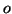
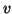
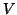
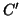
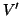
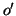
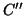
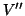

This paper is also available in postscript form. To appear at the Reflection 2001 conference. An earlier (longer) version of this paper is available as Northeastern University Tech Report NU-CCS-2001-02.
Doug Orleans - Karl Lieberherr
Northeastern University, Boston, MA 02115, USA
Traversing complex object structures is a common operation in object-oriented programs, yet traversal code can be tedious to write and is often brittle with respect to an evolving object model. Adaptive programming [8] is a development method in which each traversal is specified succinctly as a traversal strategy [10]. A traversal strategy describes a traversal at a high level, only referring to the minimal number of classes in the program's object model: the root of the traversal, the target classes, and waypoints and constraints in between to restrict the traversal to follow only the desired set of paths. The methods needed to implement a traversal can be generated from a traversal strategy and a description of the object model, either by hand or automatically with a tool such as DemeterJ [9]. If the object model changes, often the traversal strategy doesn't need to be changed; the traversal methods can simply be re-generated in accordance with the new model, and the behavior can adapt to the new structure.
With the addition of reflection to Java [5], it became possible to interpret a traversal strategy at run-time. DJ is a pure-Java library developed by the Demeter team that provides this capability. This makes it easier to add traversal strategies to a Java program, because there is no need to modify the compilation process to run the DemeterJ code generator or to convert the source code to its input language syntax. Instead traversal strategies can simply be expressed as literal strings in ordinary Java code, or even constructed dynamically from an external source not known at compile time.
This paper begins by presenting an example program that uses the DJ library, leading into an overview of the interface of DJ. The relation of DJ to DemeterJ is discussed, followed by some details of the implementation, a survey of related work, and a brief indication of future research directions.
The example domain for this paper will be that of processing XML Schema definitions [3]. An XML schema defines the structure of a class of XML documents, by enumerating the element types allowed and what attributes and subelements they may contain. The relation between an XML schema and a conforming XML document is analogous to an object model and a graph of instance objects. An XML document consists of a list of elements, each with a list of attributes (name/value pairs) and a list of subelements (which may themselves contain attributes and subelements). An XML schema (which is itself an XML document) consists of a list of type definitions and element and attribute declarations. A simple type definition defines a type of attribute or element with no subelements, while a complex type definition defines a type of element with subelements; each type definition has a name, stored as the value of an attribute with name name. An element or attribute declaration has a name and a type, stored as values of attributes with names name and type; an element declaration may contain a local type definition instead of a reference to a previously defined type. Figure 1 shows a UML [2] class diagram that represents a small subset of the XML Schema definition language.
A simple task that one might want to implement is checking a schema for undefined types. This task involves two traversals of the object structure representing the schema definition: one to collect all the types defined in the schema, and one to check each type referenced by a declaration to see if it's in the set of defined types. Figure 2 shows some definitions on the Schema class that implement these two traversals.
|
The getDefinedTypeNames method collects the set of all type definition names in a schema: it traverses the object structure rooted at the Schema object to every Attribute object reachable through the attrs field of a TypeDef object, and adds the attribute value if the attribute name is "name". The getUndefinedTypeNames method collects the set of all type references which are not in the set of defined names: it traverses to every Attribute object reachable through the attrs field of a Decl object, and adds the attribute value if the attribute name is "type" and the value is not the name of a defined type.
The static cg variable in Fig. 2 is initialized to the default class graph, which consists of all the classes in the default package. A ClassGraph object is a simplified representation of a UML class diagram; its nodes are types (classes and primitive types) and its edges are associations (has-a relations) and generalizations (is-a relations). A traversal is performed by calling the traverse method on a ClassGraph object. It takes three arguments: the root of the object structure to be traversed; a string specifying the traversal strategy to be used; and an adaptive visitor object describing what to do at points in the traversal.
A traversal strategy specifies the end points of the traversal, using the from keyword for the source and the to keyword for the target(s). In between, any number of constraints can be specified with via or bypassing. The two traversals in figure 2 both traverse from Schema to Attribute, but differ in their constraints: the first traversal only looks at attributes of type definitions (TypeDef objects), while the second traversal only looks at attributes of declarations (Decl objects). The ->TypeDef,attrs,* syntax is a pattern specifying the set of association edges in the object graph whose source is a TypeDef object and whose label (field name) is attrs; the asterisk means that an edge in the set can have any target type.
Traversal strategy interpretation is done as described in [10], with a few modifications whose details will be presented in a future paper. The general idea is that the object structure is traversed recursively, but associations (including inherited associations) which cannot possibly lead to a target object (subject to any constraints specified in the traversal strategy) are skipped. For example, in our XML Schema example, a Schema object contains a collection of SchemaItem objects; this collection may contain TypeDef objects, since TypeDef is a subclass of SchemaItem, so the elements of the collection are traversed as part of the getDefinedTypes traversal. However, some of the elements may be AttributeDecl objects, and there is no possible path to a TypeDef object; if one of these elements is encountered in the collection, no further traversal of that object is performed. The adecls association of ComplexType is never traversed at all, since it can only contain a collection of AttributeDecl objects.
An adaptive visitor class is a subtype of the Visitor class in the DJ library; it implements the Adaptive Visitor pattern described in [8, pp. 426-427]. The Adaptive Visitor pattern differs from the Visitor pattern as presented in [4] in two ways: only a minimal set of methods needs to be defined, namely those describing the functional behavior to be performed at points along the traversal, rather than one method each for every class in the traversal; and no accept methods need to be defined on the classes being traversed, nor does traversal behavior need to be defined in the visitor methods. These two differences result in a unit of behavior that can adapt both to changes in the object model and to changes in the traversal.
In place of the visitFoo methods in the Visitor pattern, an adaptive visitor can define one or more before or after methods, each with a single argument of the type being visited. These are executed at the beginning and ending, respectively, of traversals of objects of that type. The Visitor subclasses defined inline in figure 2 define one before method each, which is executed at Attribute objects, the end point of the traversal.
DJ also can be used with Java's Collections framework [6]: the asList method on ClassGraph makes a List from an object structure and a traversal strategy. The object structure is viewed as a list of objects whose type is the target of the traversal strategy; the list iterator performs the traversal incrementally (lazily) with each call to next (or even backwards, with previous). Changes to the List object ``write through'' to the object structure. This allows a traversal to be performed anywhere a List is generically traversed, such as the algorithms provided by the Collections framework like sort, reverse, or shuffle.
The DJ library is based on DemeterJ, a development tool for adaptive programming. DemeterJ takes as input a class dictionary file, which is a textual definition of a class diagram, along with one or more behavior files, which contain method definitions. The methods defined in the behavior files can be plain Java methods or adaptive methods; an adaptive method definition consists of a method signature, a traversal strategy, and a set of visitor methods to be executed during the traversal. From these input files, DemeterJ generates a set of plain Java files, which can then be compiled by an ordinary Java compiler.
DJ is not meant to replace DemeterJ, but to complement it. For those programmers who can't or don't want to develop in a language other than plain Java, the DJ library provides an easy way to integrate adaptive programming into their code. DJ also allows more flexible dynamic traversals than DemeterJ can support, due to being able to build class graphs and interpret traversal strategies at run-time; for example, classes can be loaded at run-time, perhaps downloaded from the network or constructed dynamically, and traversed using DJ. Traversal strategies might be defined at run-time as well, perhaps based on user input such as a database query. Also, this reification of adaptive programming concepts enables the creation of more generic traversal components with DJ: a method that performs a traversal can take as parameters the class graph, the traversal strategy, the list of classes to be visited, or visitor method callbacks.
However, these dynamic traversals suffer from the performance penalty of using Java's reflection facilities. Preliminary timing tests have indicated that a DJ traversal runs approximately 25 to 30 times slower than the corresponding DemeterJ traversal; however, we conjecture that this can be improved to be only 10 times slower. There is also the space overhead of keeping the reified objects in memory. The other main advantage of using DemeterJ is that it provides more development support by being able to automatically generate class definitions from the class dictionary file, as well as generate utility methods for parsing, printing, copying, and comparing object structures. Of course DemeterJ and DJ can be used together, since DJ is just a Java package, adding the dynamic flexibility benefits of DJ to a regular DemeterJ program.
Three features of DJ are new additions to adaptive programming--they are not in DemeterJ currently but could be added. One is the ability to traverse classes for which the programmer does not have source code, or is not able or willing to modify the source code; DemeterJ only generates traversal code on the classes defined in the class dictionary file, but it could allow traversal strategies to ``cut across'' library packages by generating traversal code that uses the public interface of the packages. For example, an adaptive method could traverse a compound GUI object made up of classes from the Swing library. The second is the asList method that makes a List view of a traversal; there is no easy way to pause an adaptive method, or go backwards, but the list iterator does exactly this. Third is the ability to create a new class graph that is a subgraph of another class graph, determined by a traversal strategy; in essence, this allows strategies to be composed by intersection, which is not supported in DemeterJ. For example, if you have a complicated strategy from A via B via C...to Z but you want to bypass all edges named cache, in DemeterJ you would have to add the bypassing constraint between each pair of classes in the traversal strategy; in DJ, you could create a new ClassGraph object from the main class graph and the traversal strategy from * bypassing ->*,cache,* to * and then traverse that class graph using the other traversal strategy.
When the ClassGraph constructor is called, it creates a graph object containing reflective information about all the classes in a package. For each class in the package, it calls Class.forName with the class name, which causes the JVM to load the class if it hasn't already been loaded. Once a Class object is obtained, its fields are retrieved using getDeclaredFields; then, for each Field object, its name and type class are retrieved using getName and getType, respectively. A corresponding association edge from the defining class to the type class is then added to the graph, labeled with the field name. (Optionally, a class's accessor methods can be used instead of or in addition to the fields. This allows for extra computation to be performed when traversing an edge, as well as allowing ``virtual'' edges in the class graph.) Generalization edges are also added for each superclass and interface, retrieved from a Class object using getSuperclasses and getInterfaces, respectively.
Given an object  of class to be traversed and a visitor object  of class , the traverse method performs the following steps: first, for each class  starting at Object and going down the inheritance hierarchy to , and for each class  starting at and going up the inheritance hierarchy to Visitor, the Class object for is queried using getDeclaredMethod to see if there is a method named before with one argument of type . (The query result is cached, to avoid repeated introspection, because it is very expensive in Java--an exception is thrown if there is no such method, and even though the exception is immediately caught, the JVM must fill in the complete stack trace on the exception object. There is no hasDeclaredMethod to determine whether a method exists without throwing an exception.) If a before method exists, it is run using invoke(,) on the Method object.
Then, for each class starting at and going back up the inheritance hierarchy to Object, and for each edge to be traversed from , the corresponding field or accessor method is retrieved from the Class object for using getDeclaredField or getDeclaredMethod (these are also kept in a cache to avoid repeated introspection). The target object  of the edge is then retrieved by either calling get() on the Field object or invoke(,null) on the Method object; is then recursively traversed with .
Finally, for each class  starting at and going up the inheritance hierarchy to Object, and for each class  starting at and going up the inheritance hierarchy to Visitor, the Class object for is queried to see if there is a method named after with one argument of type . If such a method exists, it is run using invoke(,) on the Method object.
The implementation of asList is somewhat trickier than regular traversal: the list iterator must return in the middle of the traversal whenever a target object is reached, and then resume where it left off (perhaps going backwards) when next is called again. An earlier version created an ad-hoc continuation-like object that was saved and restored at each iteration, but this was error-prone and not very efficient; the current version uses a separate Java thread as a coroutine, suspending and resuming at each iteration. An additional provided method gather can be used to copy all the target objects into an ArrayList, which is faster still, but the list returned by asList has two advantages: calls to set on the iterator can replace target objects in the original object structure, and modifications made to the object structure while a traversal is paused can be seen when the traversal resumes.
An Adaptive Object-Model [11] is an object model that is interpreted at run-time. If an object model is changed, the system changes its behavior. Java's object model can't be changed at run-time (other than dynamic class loading) but DJ interprets the object model when doing traversals.
DJ's Visitor class is similar to the reflective visitor described by Blosser [1] and the Walkabout class of Jay and Palsberg [7], though all three approaches were developed independently. Blosser describes a programming technique for implementing the Visitor pattern that uses reflection to choose which visitor method to call at each visit in the traversal. Jay and Palsberg improve on this by making a single generic Walkabout class that handles the reflective lookup and can be subclassed to provide the visitor methods. In addition, the Walkabout class performs the traversal of the object structure, also using reflection. However, it can only traverse the entire object structure; there is no mechanism analogous to traversal strategies for customizing the traversal to a particular subgraph.
We have presented DJ, a pure-Java library supporting dynamic adaptive programming. It is more flexible and dynamic than the preprocessing approach taken by DemeterJ, by interpreting traversal strategies at run-time and using reflection to traverse object structures with adaptive visitors, at the expense of performance.
The Demeter team is currently working on a number of enhancements to DJ. One is the ability to write visitor methods that get executed whenever certain edges in the class graph are traversed (currently, visitor method execution depends only on the class of the object being traversed). Another is the ability to write around methods on visitors that are executed in place of a traversal step and get passed a thunk that can be executed to continue the traversal. Both of these enhancements would allow visitors to have more control over the behavior that gets executed during a traversal.
There are many optimizations that could be made to traversal interpretation. Some of the reflective overhead of calling Field.get and Method.invoke could be avoided by generating a new class (at run-time) that invokes the appropriate fields and methods directly; although generating a class would be a one-time performance hit, overall performance would be much better if the same visitor and traversal strategy were used together multiple times. Other applications of partial evaluation to speed up the traversal may be possible as well.
Visit the Demeter home page for more information about DJ, DemeterJ, and adaptive programming: http://www.ccs.neu.edu/research/demeter/.
Josh Marshall designed and implemented the early versions of DJ. Johan Ovlinger designed and implemented the predecessor to DJ, TAO (Traversals As Objects), and suggested the run-time generation of a class to avoid reflective overhead. Pengcheng Wu is implementing several enhancements to DJ, including around visitor methods and visitor methods on edges. Thanks to Lars Hansen for suggesting the use of threads as coroutines for the asList iterator. The XML Schema example is a simplified version of an XML-Schema-to-Java tool being developed by Adak Prasenjit. Thanks to Erik Ostrom, Robert Stroud, Greg Sullivan, and the anonymous reviewers, who provided many insightful comments and suggestions. Research supported by Defense Advanced Research Projects Agency under agreement F33615-00-C-1694 (PCES Program).
This document was generated using the LaTeX2HTML translator Version 99.2beta8 (1.42)
Copyright © 1993, 1994, 1995, 1996,
Nikos Drakos,
Computer Based Learning Unit, University of Leeds.
Copyright © 1997, 1998, 1999,
Ross Moore,
Mathematics Department, Macquarie University, Sydney.
The command line arguments were:
latex2html -split 0 -no_navigation -show_section_numbers -white dj
The translation was initiated by Doug Orleans on 2001-07-07